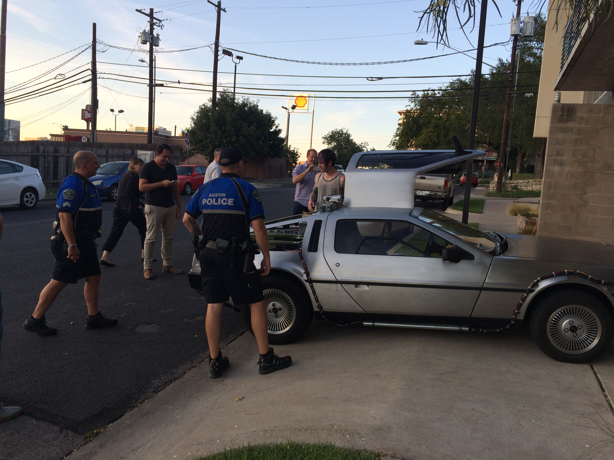
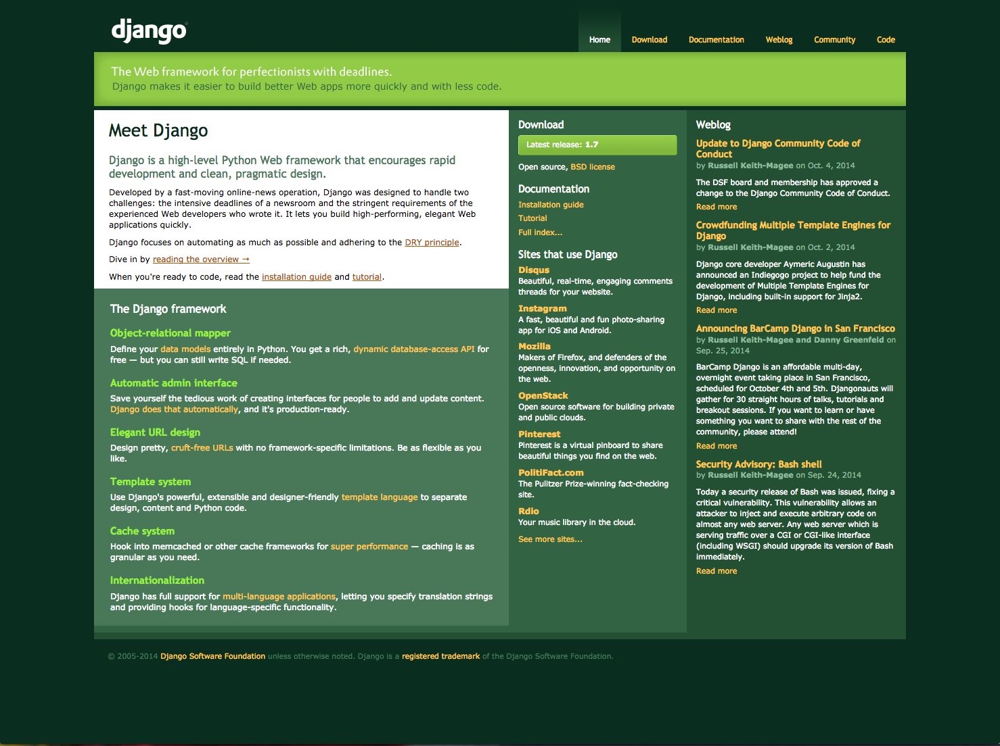

Created by Mark Cotton / @mcotton
I am Mark Cotton. I am a big nerd. I do programmer-y stuff. Eagle Eye Networks gives me money to programmer-y stuff. [we're hiring]
Video Security in the Cloud


$ django-admin.py startproject mysite
Write smaller python clients to subscribe to poll stream for cameras. Handle as much as possible as asynchonous requests.
LDAP is document based, not relational, easily replicated and very fast on reads. Add your own indexes and relationships.
GRequests allows you to use Requests with Gevent to make asyncronous HTTP Requests easily. Same API we're already familiar with.